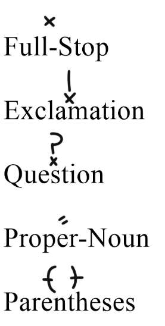

Punctuation—being mostly unimportant to deriving the meaning of a section of writing—can be omitted. However if needed the following marks can be used.
The proper-noun mark is used when something is a specific person, place, or thing. It is not used exactly like capitals in English since the word at the start of a sentence is not always marked with the proper-noun mark.